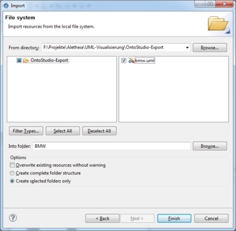
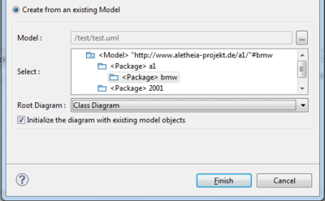
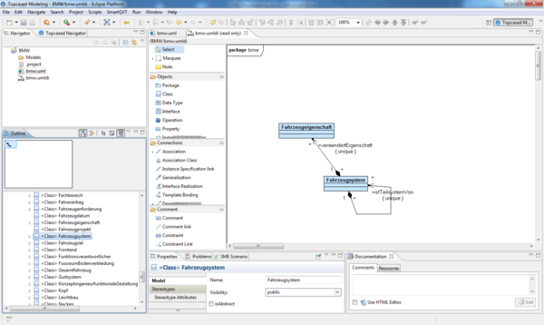
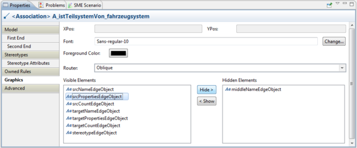

It is possible to visualize an ontology or parts of it using the UML export function of OntoStudio and the "Topcased" UML editor.
Precondition:
| • | The ontology has to be exported from OntoStudio as an UML file. |
| 1. | Download the RCP version of Topcased and install it. |
The UML diagram can be viewed using the "Topcased" editor.
| 2. | To start the visualization create a new Topcased project: |
| b. | Choose File -> New -> Project. |
| c. | Select Topcased -> Topcased Project. |
| d. | Confirm by choosing Next. |
| e. | Define a project name and confirm by choosing Finish. |
| 3. | Import the UML file from OntoStudio into the Topcased project: |
| b. | Make a right mouse click and confirm by choosing Import…. |
| c. | Select General -> File System. |
| d. | Continue by choosing Next. |
| e. | Choose the destination of the folder that includes the appropriate UML file by clicking on Browse…. |
| g. | Flag the checkbox next to the UML file that you wish to import. |
| h. | Confirm by choosing Finish. |

The UML file has now been imported.
| 4. | Create the graphical illustration of the file: |
| a. | Select the imported UML file in the project. |
| b. | Choose New -> UML Model with TOPCASED. |
| c. | Select Create from an existing Model. |
| d. | From the Select: menu item choose the corresponding hierarchy level of the ontology. |
| e. | From the Root Diagram dropdown list, choose Class Diagram. |
| f. | Activate the checkbox Initialize the diagram with existing model objects. |
| g. | Confirm by choosing Finish. |

The ontology is loaded as a UMLDI diagram.
This way it is possible to gain a graphical overview of the classes and properties. In the central area of the tool you can recognize a drawing area. If the extent of the ontology allows it, Topcased loads all of the classes with their properties into the drawing area. As this may be too overloaded, we suggest removing them in the first instance to build an individual view of the ontology.
NOTE: If the ontology is too big to show on the drawing area, none of the classes will be loaded (a warning message appears) and you don't have to perform the following four steps:
| a. | Move the mouse cursor onto the drawing area and press the left mouse button. |
| b. | Choose “Control + A” on the keyboard. |
| c. | Make a right mouse click and choose “Delete From Diagram”. |
| d. | Confirm the appearing dialog. |
The classes of the ontology are now removed.
| 5. | Via drag and drop it is now possible to arrange only the appropriate classes of the ontology. |
This way you can create an individual view of the classes.
| a. | Choose a class from Outline and pull it to the drawing area. |
You can also arrange the classes with the mouse.
Repeat these steps until you have the desired graphical overview of your ontology.

| 6. | You can export your visualization as an image. |
| a. | Make a right mouse click in the drawing area. |
| b. | Choose Export to file…. |
| c. | Select the file format and save the visualization as an image. |
Miscellaneous
| 1. | To adjust the format of the drawing area, make a right click on the drawing area without a choosing a class and choose Graphical Properties -> Change Diagram Properties. |
| 2. | To change the layout of the classes and properties, select a class or a property from the drawing area. |
| 3. | To change the visibility of certain elements of a class or property, select Graphics in the tab Properties in the lower part and use the buttons Hide > and < Show. |
